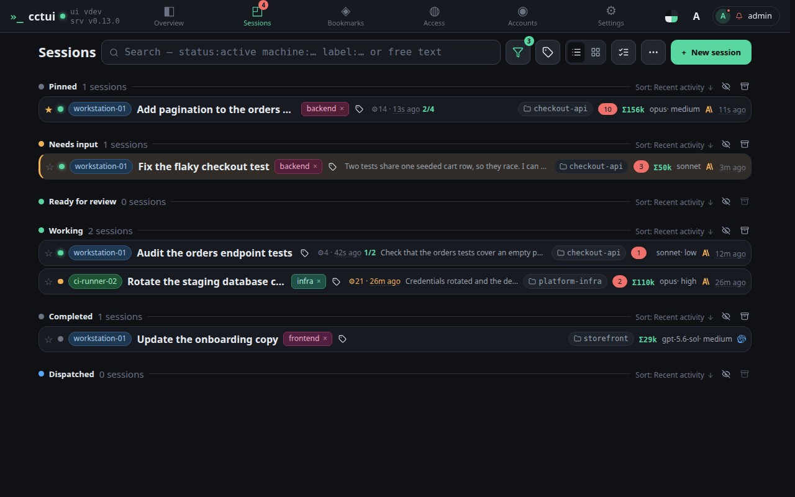
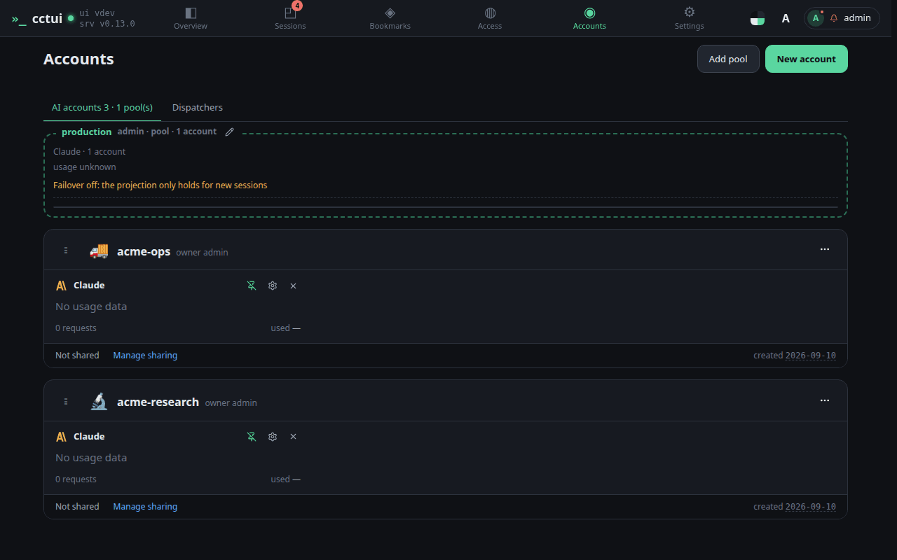
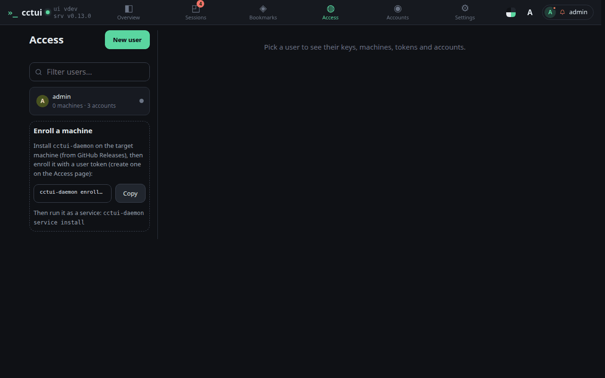
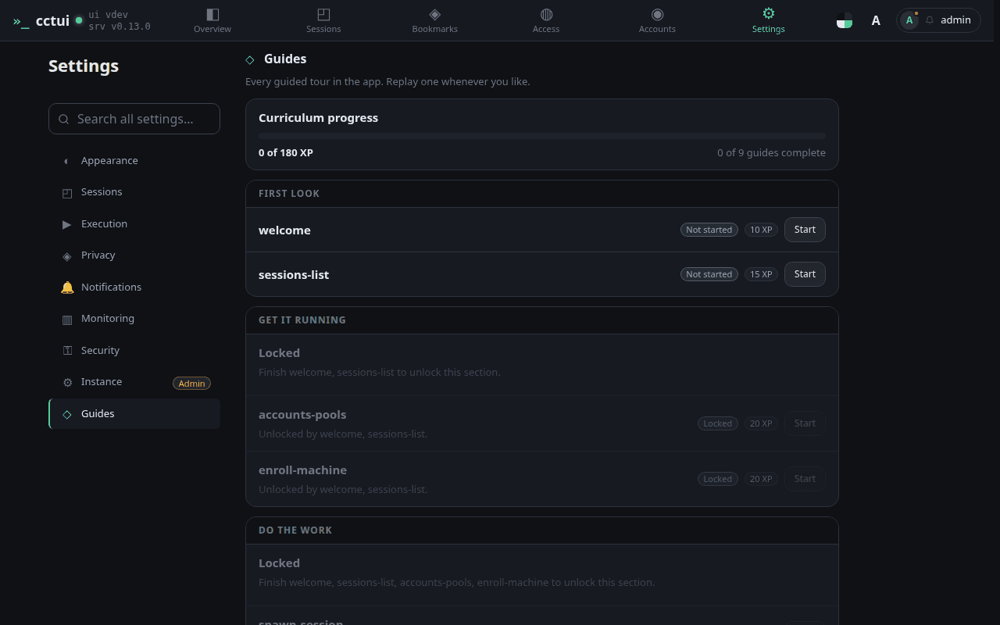

Start here: is the fleet healthy? One control room for every Claude Code session you run. These tiles answer the first question before you touch anything — what is live, what is stuck, which machines are up.

Sessions — where the work happens Every run you have started, grouped by what it needs from you. The ones blocked on an answer rise to the top, so a long fleet still reads in one glance.

Accounts — where the quota comes from Provider accounts are grouped into pools, and a session draws from a pool rather than a fixed account, so one hitting a rate limit steps aside instead of stalling the queue.

Access — what may run work Machines supply the compute, and they join the fleet from here with a single enrolment command. If a session cannot find anywhere to run, this is the page to open.

Now walk it for real That is every screen. The remaining guides run inside the app, pointing at the real controls in order — connect an account, enrol a machine, start a session, follow it. They all live on this page.